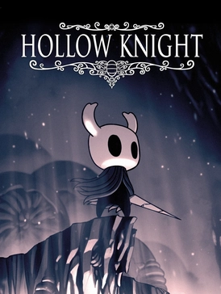

The Favorite Things in my Life
- I like Video Games, Here are some Examples:
- Mario Bros. Series
- Hollow Knight/Silksong
- Peak
- I like Coding, I use GameMaker Engine 2.
- I also like food, Here are my Favorites:
- Tacos
- Chicken Parm Spaghetti
- Pretty much everything Potatoes
- Eggs, Bacon, and Hash
- Chili (Soup)



Links to what I Used: